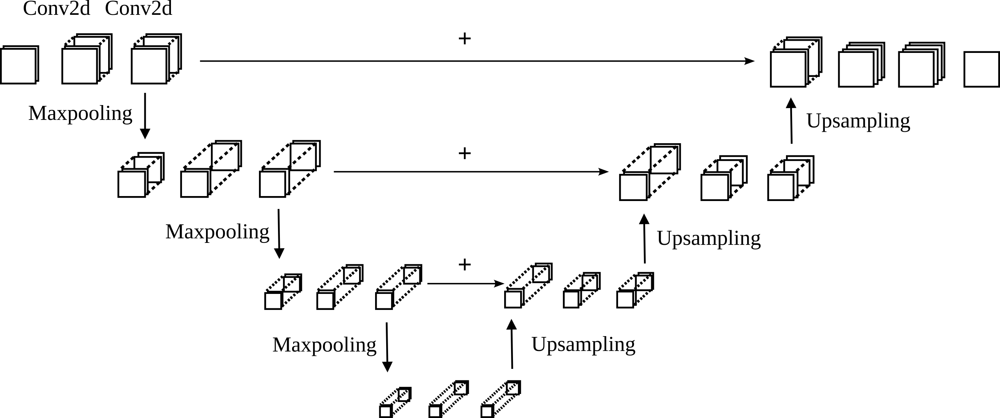
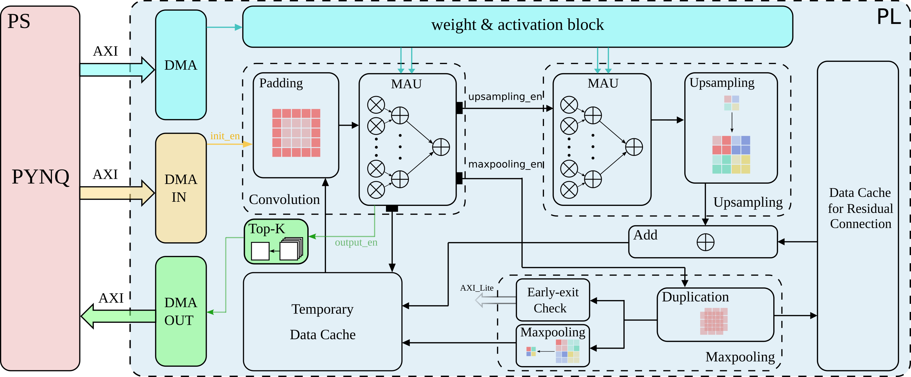
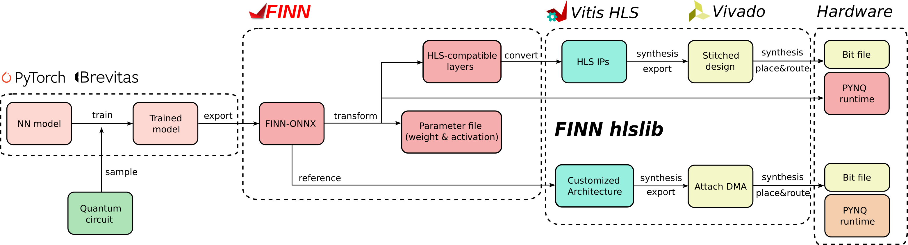

We investigate how RFSoC FPGAs equipped with high-performance programmable processors, custom logic and high-speed analogue and digital converters can be used to facilitate Quantum photonic experiments with low decoherence time. We exploit the flexibility and low-power characteristics of FPGAs to control Quantum devices with low latency and low thermal impact

Learn about Quantum error correction with quantized neural networks on FPGAs
Huo, Ran and José L. Núñez-Yáñez., 'FPGA-Accelerated Early-Exit Neural Decoder for Quantum Error Correction', 2025 28th Euromicro Conference on Digital System Design (DSD) (2025): 616-624., DOI: 10.1109/DSD67783.2025.00090.

Quantum error correction (QEC) is indispensable for fault-tolerant quantum computing, yet implementing powerful decoders in hardware remains a bottleneck.In this work, we present QUNET, a quantized modular U-Net decoder for surface codes, which incorporates quantization-aware training (QAT) to compress weights and activations to as low as 4 bits and introduces an early-exit mechanism that dynamically routes simple syndromes through a shallower sub-network to save on average 34\% of decoding time. Our design achieves competitive logical accuracy compared to MWPM, while consuming up to 50\% fewer FPGA resources than dataflow implementations, demonstrating a practical hardware deployment of QEC decoders that provide great flexibility and efficiency.

We use the FINN framework to design the neural network hardware but focus on latency rather than throughput since the problem is batch-1 and there is not enough input data to fill a deep dataflow. Therefore we use the limited logic resources to increase the horizontal parallelism and reduce latency.